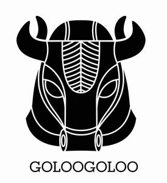

Trade Mark Journal No.2026/003 16 January 2026
UK00004316306 27 December 2025 (16,41,45)

- Class 16
- Fine art prints; Fine art prints; Art prints; Graphic art prints; Printed art reproductions; Lithographic works of art; Works of art of paper; Graphic art reproductions; Fine paper; Art paper; Works of art made of paper; Art etchings; Graphic art books; Graphic prints; Art pictures; Printed periodicals in the field of figurative arts; Photographic or art mounts; 3D wall art made of paper; Works of art and figurines of paper and cardboard, and architects' models; Canvas prints; Photographic prints; Decoration and art materials and media; Prints; Pictorial prints; Dye-sublimation print paper; Laser print paper; Paper for use in the graphic arts industry; Colored craft and art sand; Lithographic prints; Giclee prints; Printed music; Cartoon prints; Print characters; Digital printing paper; Photographic printing paper; Printed music books; Silk screen prints; Graphic reproductions; Reproductions (Graphic -); Print blocks; Art mounts; Paintings and calligraphic works; Prints [engravings]; Engravings [prints]; 3D wall art made of card; Posters; Packaging materials made of cardboard.
- Class 41
- Art exhibitions; Mural art painting services; Art gallery services; Gallery services (Art -); Art exhibition services; Arranging, conducting and organisation of workshops; Conducting workshops and seminars in art appreciation; Conducting of workshops and seminars in art appreciation; Organization of exhibitions for cultural or educational purposes.
- Class 45
- Intellectual property (Licensing of -); Licensing of intellectual property; Copyright management; Exploitation of industrial property rights and copyright by licensing.
goloogoloo ltd